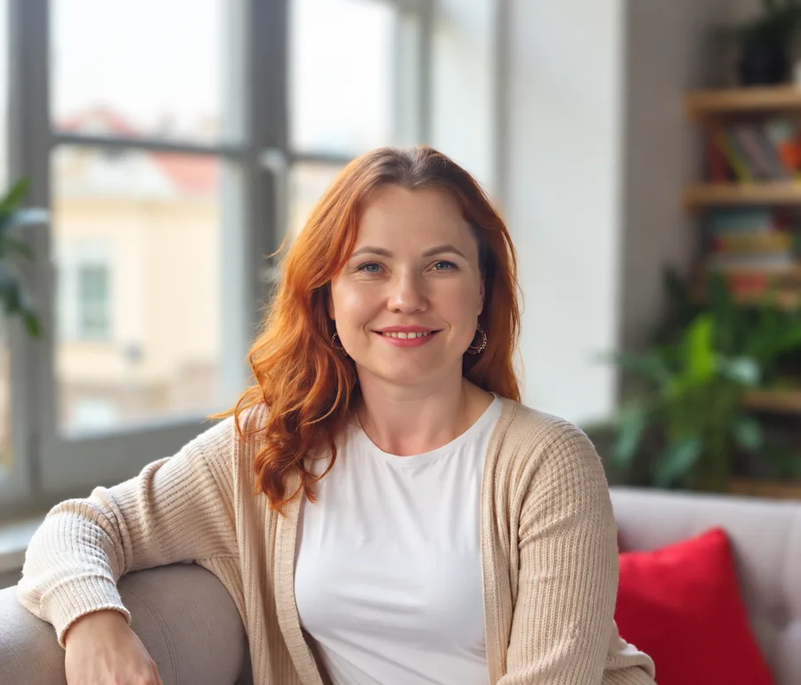
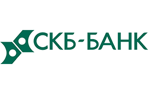
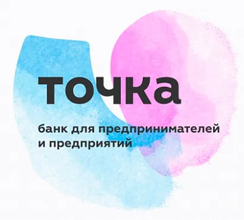
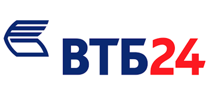
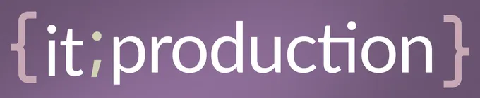
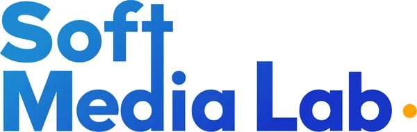
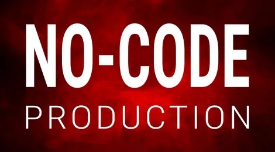
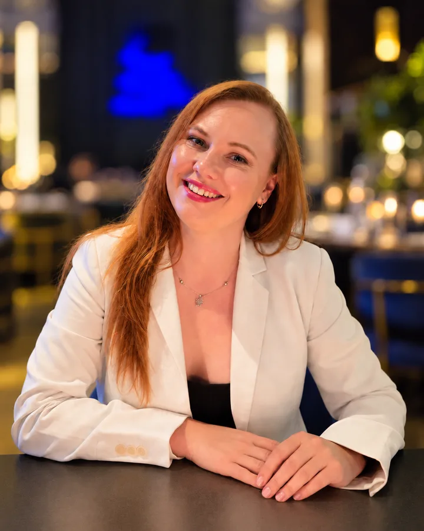

Есть новая идея цифрового продукта
Нужно решить, кому он нужен, какую задачу решит и что должно войти в первую версию — прежде чем заказывать разработку сайта или приложения.
Мария Галиева · Продуктовый консультант · Основатель IT Production

Нужно решить, кому он нужен, какую задачу решит и что должно войти в первую версию — прежде чем заказывать разработку сайта или приложения.
Бизнес и предложение изменились, а продукт остался прежним. Разберём, что мешает клиенту дойти до нужного действия, что стоит сохранить и что потребуется пересобрать.
Ошибки повторяются, важные действия зависят от отдельных людей, руководителю трудно видеть результат, а расширять штат становится дорого. Разберём один ключевой процесс и сравним способы его изменить.
Не ради знакомства с ещё одной программой, а чтобы быстрее разбирать информацию, готовить материалы и проверять идеи. Начнём с задачи, которая уже есть в вашей работе.
Работа в банках научила меня смотреть на решения через цели бизнеса, показатели и поведение людей. Позже опыт в продуктовых и IT-командах, а затем собственная IT-компания дали понимание всего пути до реализации: от идеи и интерфейса до команды, сроков, бюджета и рисков. Насмотренность в разных компаниях и отраслях помогает быстрее видеть суть, отсекать лишнюю сложность и находить решения, которые бизнес действительно сможет внедрить.






Работа с реальными целями и задачами бизнеса.
Внешние и внутренние пользователи, их задачи, сценарии и реальный опыт.
Технологии, IT-команда, ограничения, сроки и стоимость разработки.
Что делаем, в какой последовательности, какой командой, с каким бюджетом и рисками.
Собираю контекст и наблюдения.
Связываю проблему с целью бизнеса.
Сопоставляю варианты и затраты.
Отделяю факты от предположений.
Называю следующий проверяемый шаг.
Цепочка продолжается вправо →
Отдельная задача обнаружилась во время работы над приложением лояльности и доставки для сети.
Цифры, интерфейсы и ссылки добавим в полный разбор после получения материалов.
Роль: требования, структура, действия пользователя и координация команды со стороны IT Production. Результат: приложение выпущено.
Посмотреть проект ↗Пока показываем как проект команды IT Production. Личную роль, этапы и результаты уточним перед отдельным разбором.
Посмотреть проект ↗В продуктовых и процессных задачах я веду работу от разрозненного запроса до согласованных материалов для следующего этапа. Клиенту не приходится самому собирать мои выводы в задание для команды.
Разговариваю с собственником и участниками процесса, изучаю продукт, доступные данные, ограничения и то, что уже пробовали делать.
Помогаю назвать цель, признаки результата и главный риск. Если первоначальный запрос не ведёт к этой цели, показываю, где возникло расхождение.
Сравниваю способы решения, последовательность шагов и необходимые ресурсы. По задаче готовлю рабочие схемы, структуру, черновые макеты или описание первой версии.
Оформляю выводы в документ, который можно обсудить, оценить и передать исполнителям. Объясняю, почему выбран именно такой путь и что стоит проверить дальше.
Если проект переходит к реализации, я могу отдельно организовать работу вашей команды или подключить команду IT Production. Точный состав работы согласуем до старта конкретного проекта.

Первая встреча — 30 минут бесплатно.
Обсудим задачу → следующий шаг → ориентиры
Для нового сайта или переосмысления существующего. После двух созвонов, знакомства с продуктом и экспресс-анализа ниши и конкурентов вы получите текстовый план: состав страниц, блоки внутри них, примерное содержание, места для карточек, кейсов, видео и кнопок. Его можно передать дизайнеру или разработчику.
Не входят: полные тексты, графические макеты и разработка.
Для идеи, где нужно определить основные действия пользователя и состав первой версии. В зависимости от задачи подготовлю путь пользователя, перечень ключевых функций, описание экранов и, если нужно, черновые макеты. Точный состав исследования, результат и стоимость согласуем до начала работы.
Разработка приложения оценивается отдельно.
Для процесса, в котором ошибки, зависимость от людей или недостаток данных мешают управлять результатом. Вы получите схему и описание текущей работы, 2–3 способа её изменить, предварительную оценку затрат и отдачи, последовательность внедрения и ориентировочную смету пробной версии, если она нужна.
Границы процесса согласуем до старта. Само внедрение — отдельный этап.
Возьмём одну вашу задачу: разбор таблицы, подготовку материала или сбор и упорядочение открытой информации. Помогу выбрать и настроить инструмент; вы выполните действия вместе со мной, поймёте, как проверить результат, и сможете повторить подход.
Заранее определим объём встречи. Это личная практика, не внедрение ИИ во всю компанию.
Финальную стоимость и границы задачи определим до начала платной работы.
За 30 минут мы уточняем задачу и следующий шаг. Детальный анализ, документы, макеты и практическая настройка ИИ входят только в согласованный платный формат.
Да. Вы можете работать со своей командой или подрядчиком. Если понадобится участие IT Production, обсудим его отдельно.
По счёту ИП Галиевой Марии Альбертовны, без НДС. Формулировку проверим перед публикацией.